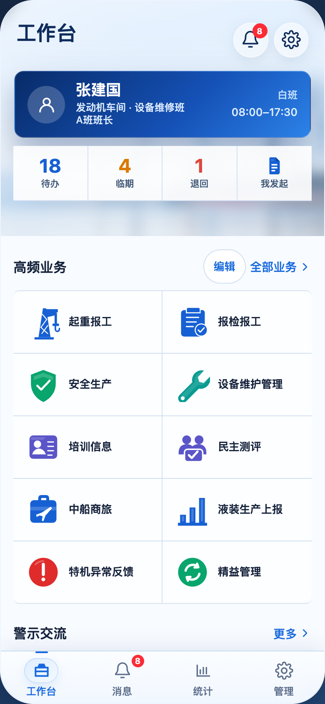
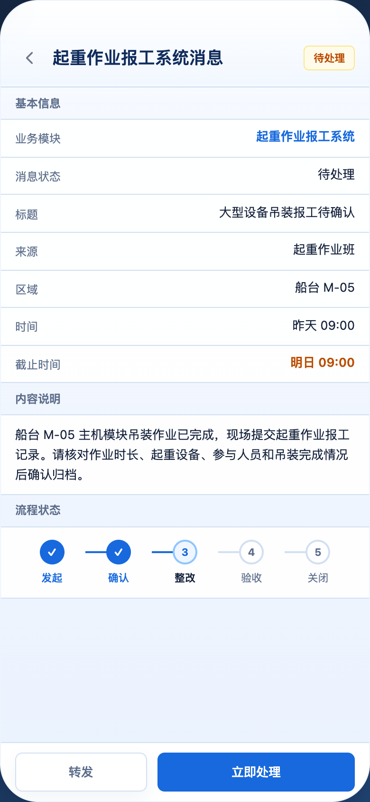
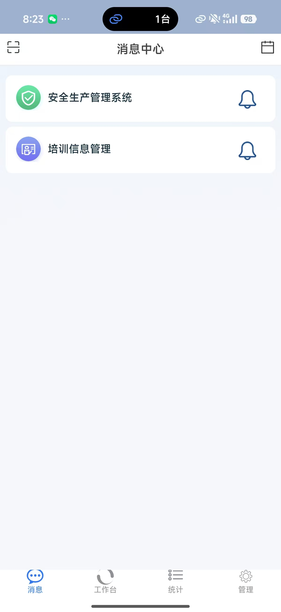
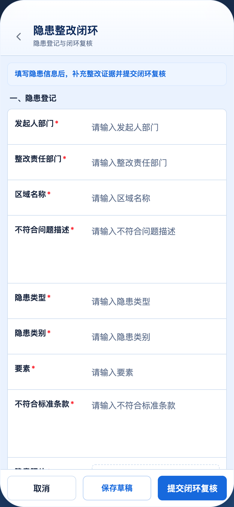
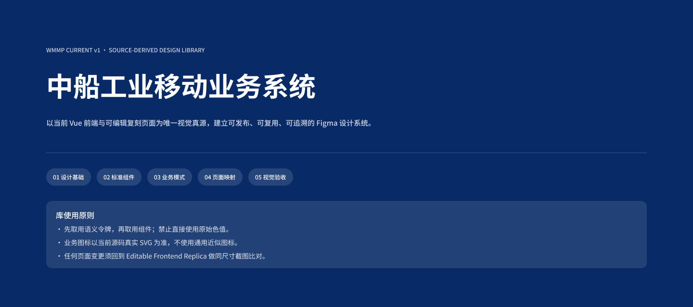

Workbench
Task overview above business shortcuts
r6 gives the task overview a place above frequent business shortcuts and puts the full catalog behind its own link.



UX design internship · Summer 2026
A mobile redesign for finding and handling everyday shipyard tasks.
Explore the redesign

01 / Overview
The existing mobile platform brings production, safety and internal services into one app. I worked within its established workflows to clarify where tasks start and how they are handled.
02 / The Challenge
The platform served several shipyard operations. I reviewed the existing screens and records to find where the interface could better support the work already in place.

03 / Design Thinking
I used the PRD to identify who raises, receives and follows up on work. Then I traced those responsibilities through System Map and Page Tree, down to the screens and fields they depended on.
PRD workflow · System Map V1 · IA proposal
The PRD traces work from initiation to follow-up. The map shows that the Workbench also serves as a directory. I kept both jobs on the Workbench, with an expandable task overview above regular shortcuts and a separate All Businesses entry. Workbench comparison
Page Tree V1 · r6 navigation
The page tree showed that the same business area can appear under Workbench and Messages. I kept business groups in Messages so readers can tell which system a pending item belongs to. The detail then brings together its source, deadline and workflow status. Message path
Original form screenshots · August 7 field review
The field review distinguished reporting and responsible departments for hazard rectification, and documented when dispatch and pickup reasons apply in machining. I reused input and validation patterns in both forms. When the source only showed a list or status, I kept the existing form structure. Safety form
04 / The Redesign
Images from the original product and the r6 handoff retain the Chinese interface. English captions explain the key controls.
Workbench
r6 gives the task overview a place above frequent business shortcuts and puts the full catalog behind its own link.

Safety Production
I checked the original hazard records to identify fields the redesign needed to keep, including department, classification and corrective evidence.

Reporting department and responsible department are separate required fields.
A draft is stored locally. In the prototype, submitting for review checks required fields.
05 / Outcome & Reflection
The August 2026 r6 package was submitted for handoff so the team could inspect the design, page inventory and demo together.

Reviewing the original forms taught me where a shared pattern could simplify the UI and where business rules had to stay explicit. The AI-assisted build let me check navigation and validation in a working demo. I would next observe employees finding a pending task and preparing a hazard correction, focusing on where roles or next steps are still unclear.